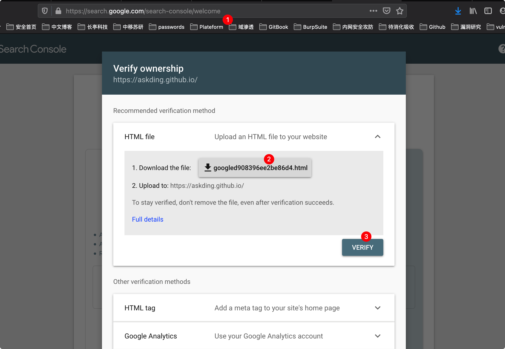
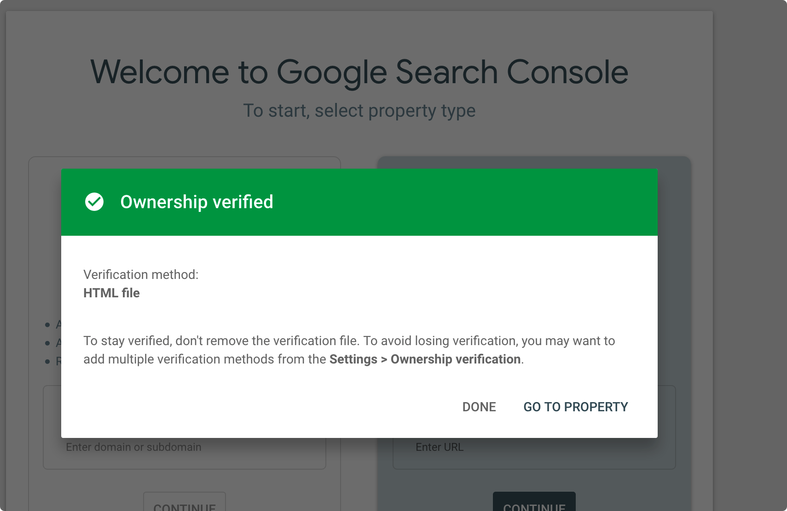
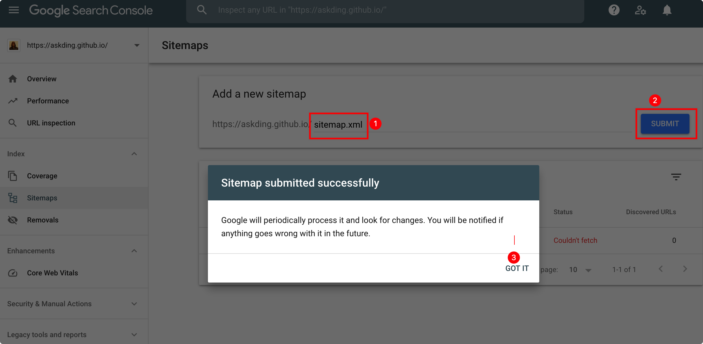
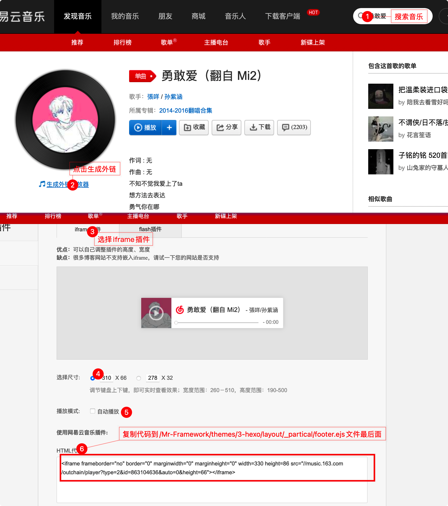
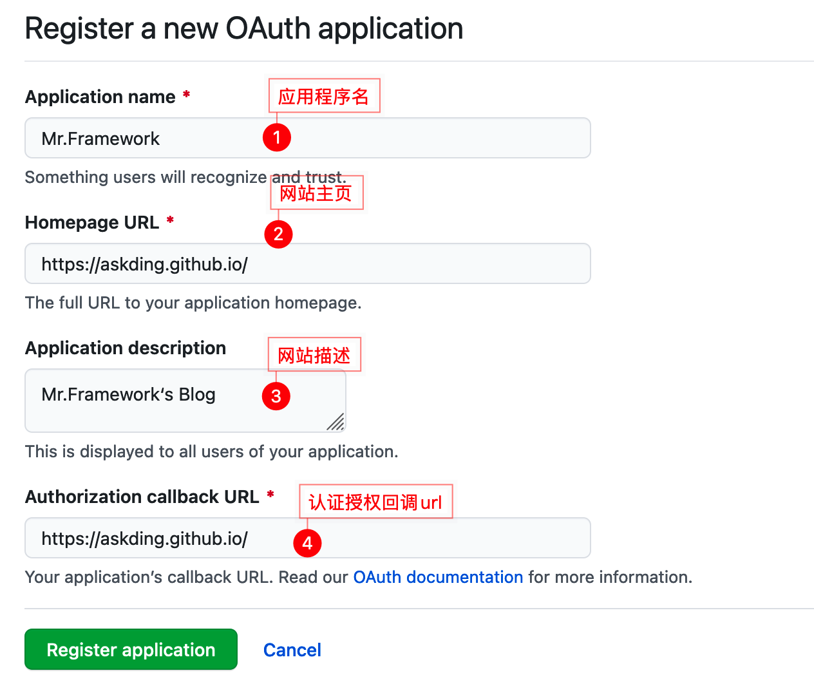
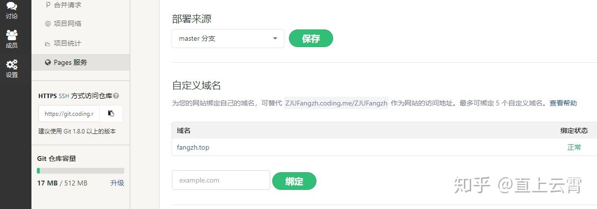
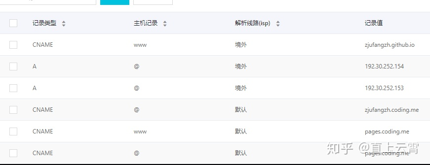
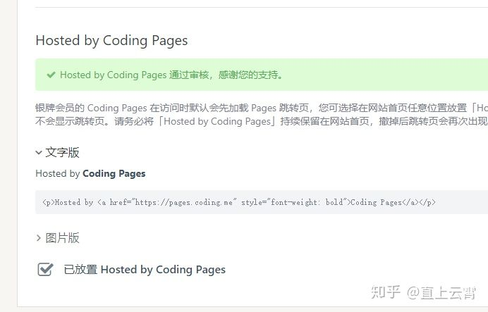
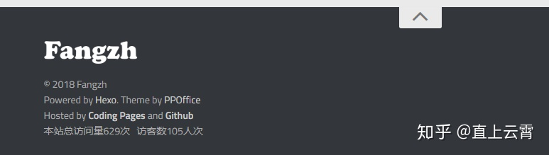

推荐博文：
- https://mp.weixin.qq.com/s/J4ghw2iWQTKoNynF3gIcPQ
- https://www.shangyang.me/2016/12/16/hexo-base-concept/
- https://segmentfault.com/a/1190000021614307
- https://juejin.cn/post/6844903805859921933

搭建过程
hexo 是一个快速、简洁且高效的博客框架。
Hexo安装
brew install git node # 安装git 和node
npm config set registry https://registry.npm.taobao.org # 配置npm源
npm install -g hexo-cli # 安装hexo
proxychains4 hexo init Mr-Framework # 初始化博客
git clone https://github.com/yelog/hexo-theme-3-hexo.git themes/3-hexo # 下载3-hexo主题Hexo目录结构
Mr-Framework
├── _config.yml // 网站配置文件
├── node_modules // npm依赖模块目录
├── package-lock.json // node项目配置文件
├── package.json // node项目配置文件
├── scaffolds // 新建mardown文件模板目录
│ ├── draft.md
│ ├── page.md
│ └── post.md
├── source // 存放makrdown文件和图片
│ └── _posts
│ └── hello-world.md //hexo默认markdown文件
└── themes //hexo主题目录
└── 3-hexo
├── LICENSE
├── README.md
├── _config.yml //主题配置文件
├── languages //语言支持插件
│ ├── en.yml
│ └── zh-CN.yml
├── layout //布局文件
│ ├── _partial
│ ├── index.ejs
│ ├── indexs.md
│ └── post.ejs
└── source //主题源代码
├── css
├── img
└── jsHexo配置文件
# Hexo Configuration
## Docs: https://hexo.io/docs/configuration.html
## Source: https://github.com/hexojs/hexo/
# Site
title: Mr.Framework #网站标题
subtitle: 'subtitle' #网站副标题
description: '' #网站描述,主要用于SEO，告诉搜索引擎一个关于您站点的简单描述，通常建议在其中包含您网站的关键词
keywords: #网站的关键词,支持多个
author: askDing #作者
language: en #网站使用的语言
timezone: 'Asia/Shanghai' #时区，
# URL
## If your site is put in a subdirectory, set url as 'http://example.com/child' and root as '/child/'
url: https://askding.github.io
root: / # 网站根目录存放位置
permalink: :category/:title.html # 文章中的永久链接格式
permalink_defaults: # 永久链接中的默认设置
pretty_urls:
trailing_index: true # Set to false to remove trailing 'index.html' from permalinks
trailing_html: true # Set to false to remove trailing '.html' from permalinks
# Directory
source_dir: source # 资源文件夹，存放内容的
public_dir: public # 公共文件夹，用于存放生成的站点文件
tag_dir: tags # 标签文件夹
archive_dir: archives # 归档文件夹
category_dir: categories # 分类文件夹
code_dir: downloads/code # source_dir下的子目录,存放代码用的
i18n_dir: :lang # 国际化文件夹
skip_render: # 跳过指定文件的渲染，匹配到文件将直接复制到public目录中
# Writing
new_post_name: :year-:month-:day-:title.md # File name of new posts
default_layout: page
titlecase: false # Transform title into titlecase
external_link:
enable: true # Open external links in new tab
field: site # Apply to the whole site
exclude: ''
filename_case: 0
render_drafts: false
post_asset_folder: false
relative_link: false
future: true
highlight:
enable: false
line_number: true
auto_detect: false
tab_replace: ''
wrap: true
hljs: false
prismjs:
enable: false
preprocess: true
line_number: true
tab_replace: ''
# Home page setting
# path: Root path for your blogs index page. (default = '')
# per_page: Posts displayed per page. (0 = disable pagination)
# order_by: Posts order. (Order by date descending by default)
index_generator:
path: ''
per_page: 10
order_by: -date
# Category & Tag
default_category: askDing
category_map:
tag_map:
search: # 文章搜索
path: search.xml
field: _post
# Metadata elements
## https://developer.mozilla.org/en-US/docs/Web/HTML/Element/meta
meta_generator: true
# Date / Time format
## Hexo uses Moment.js to parse and display date
## You can customize the date format as defined in
## http://momentjs.com/docs/#/displaying/format/
date_format: YYYY-MM-DD
time_format: HH:mm:ss
## updated_option supports 'mtime', 'date', 'empty'
updated_option: 'date'
# Pagination
## Set per_page to 0 to disable pagination
per_page: 10
pagination_dir: page
# Include / Exclude file(s)
## include:/exclude: options only apply to the 'source/' folder
include:
exclude:
ignore:
# Extensions
## Plugins: https://hexo.io/plugins/
## Themes: https://hexo.io/themes/
theme: 3-hexo
## Plugins: http://hexo.io/plugins/
#RSS订阅和sitemap
plugin:
- hexo-generator-feed
- hexo-generator-feed
- hexo-generator-sitemap
#Feed Atom
feed:
type: atom
path: atom.xml
limit: 20
# Deployment
## Docs: https://hexo.io/docs/one-command-deployment
deploy:
type: 'git'
repository: https://github.com/askDing/askDing.github.io.git
branch: master
主题配置
hexo的主题仓库点击此处
推荐的博客主题 **3-hexo**、Arknights 、 freemind.bithack
Mr-Framework/themes/3-hexo/_config.yml
基础配置
UI颜色配置
Mr-Framework/themes/3-hexo/source/css/_partial/nav-right.styl
.nav-right
width 420px
height 100%
background #F2F1D7 /* 柔黄色 */
border-right 1px solid #e5e8ec
overflow hidden
float left
position relative
-webkit-user-select none
-moz-user-select none
-ms-user-select none
-o-user-select none
user-select noneMr-Framework/themes/3-hexo/source/css/_partial/post.styl
#post
height 100%
font-weight: 350;
font-size: 14px;
line-height 1.55
background #E8FFE8 /* 浅绿色 */
overflow-x hidden
overflow-y auto
-webkit-overflow-scrolling touch
font-family -apple-system,system-ui,BlinkMacSystemFont,Helvetica Neue,PingFang SC,Hiragino Sans GB,Microsoft YaHei,Arial,sans-serif
color #2f2f2f
margin-left 1px
article
padding 1em /* 内容间隔1em */
background #E8FFE8
.article-entry>p:nth-child(1)
margin-top 20px
.copyright
margin-top 50px
padding-bottom 30px
background #E8FFE8 /* 版权浅绿色 */
line-height 14px
text-align center
color #BCC1C4Gitalk评论背景颜色
/Mr-Framework/themes/3-hexo/source/css/_partial/comment.styl
#comments
padding 2.5em
background #e8ffe8 /* 评论区背景颜色 */
.comment-bar
display block
cursor pointer
background rgba(255,255,255,0.3)
padding 0.5rem
-webkit-box-shadow 3px 2px 8px rgba(0,0,0,0.07)
box-shadow 3px 2px 8px rgba(0,0,0,0.07)
text-align center
font-size 2rem头像配置
图片存放在 Mr-Framework/themes/3-hexo/source/img/
avatar: /img/avatar.png
favicon: /img/avatar.png联系链接配置
ink:
theme: color # 链接样式，color: 彩色图标 white: 黑白图标
items:
rss: /atom.xml
github: https://github.com/askDing
email: askding@qq.com
qq: 741474596文章分类设置
category:
num: true # 分类显示文章数
sub: true # 开启多级分类
sort:
- Cyber Security
- aaa
- bb左下角自定义菜单
menu:
about: # '关于' 按钮
on: true # 是否显示
url: /about # 跳转链接
type: 1 # 跳转类型 1：站内异步跳转 2：当前页面跳转 3：打开新的tab页
friend: # '友链' 按钮
on: true # 是否展示
menus: # 添加的其他菜单写在 menus 下，如下三个菜单：动态菜单1、动态菜单2、动态菜单3
相册:
on: false
url: /photo
type: 1 # 跳转类型 1：站内异步跳转
叶落阁:
on: false
url: http://yelog.org/
type: 2 # 跳转类型 2：当前页面跳转
github:
on: false
url: https://github.com/yelog
type: 3 # 跳转类型 3：打开新的tab页
文末声明
# 文末声明
article_txt: 转载请注明来源，欢迎对文章中的引用来源进行考证，欢迎指出任何有错误或不够清晰的表达。可以在下面评论区评论，也可以邮件至 askding@qq.com
bottom_text: ©1996-2020 Mr.Framework
# 自定义页面最下方的站点版权信息
# 如果不填，则自定义为 ©2017 author (这个author为hexo根目录_config.yml中配置的)
# 底部备案号
miit:
on: false
info: 京ICP证030173号
url: http://beian.miit.gov.cn/ # 默认链接为 http://beian.miit.gov.cn/
左侧导航宽度
Mr-Framework/themes/3-hexo/source/css/_partial/nav-left.styl
.nav-left
width 130px /* 左侧导航宽度 130px */
height 100%
background #2A2935
box-shadow inset -15px 0 15px -15px #222
float left
position relative
-webkit-user-select none
-moz-user-select none
-ms-user-select none
-o-user-select none
user-select none不蒜子网站计数配置
# 不蒜子网站计数设置
# http://ibruce.info/2015/04/04/busuanzi/
visit_counter:
on: true
site_visit: true
page_visit: true
代码高亮配置
- 禁用网站配置文件里的代码高亮设置
Mr-Framework/_config.yml
highlight: enable: false /* 禁用代码高亮 */ line_number: true auto_detect: false tab_replace: '' wrap: true hljs: false - 启用主题配置文件里的代码高亮
Mr-Framework/themes/3-hexo/_config.yml
highlight: on: true # true开启代码高亮，开启需要关闭博客 _config.yml 中的 highlight lineNum: false # true显示行号 copy: true # 复制功能 theme: gruvbox-dark
高级配置
MathJax数学公式
修改 _config.yml
# MathJax 数学公式支持
mathjax:
on: true #是否启用
per_page: false # 若只渲染单个页面，此选项设为false，页面内加入 mathjax: true
yaml复制代码考虑到页面的加载速度，支持渲染单个页面。
设置 per_page: false ,在需要渲染的页面内 加入 mathjax: true
注意:
由于hexo的MarkDown渲染器与MathJax有冲突，可能会造成矩阵等使用不正常。所以在使用之前需要修改两个地方
编辑node_modules\marked\lib\marked.js脚本
- 将451行 ，这一步取消了对
\\,\{,\}的转义(escape)
escape: /^\\([\\`*{}\[\]()# +\-.!_>])/,
改为
escape: /^\\([`*\[\]()# +\-.!_>])/,- 将459行，这一步取消了对斜体标记
_的转义
em: /^\b_((?:[^_]|__)+?)_\b|^\*((?:\*\*|[\s\S])+?)\*(?!\*)/,
改为
em:/^\*((?:\*\*|[\s\S])+?)\*(?!\*)/,添加Mermaid图标
##>>>>>>>在网站配置文件中Mr-Framework/_config.yml添加如下内容 <<<<<<<<<<<<###
# Mermaid 支持
mermaid:
on: true
cdn: //cdn.jsdelivr.net/npm/mermaid@8.4.2/dist/mermaid.min.js
#cdn: //cdnjs.cloudflare.com/ajax/libs/mermaid/8.3.1/mermaid.min.js
options: # 更多配置信息可以参考 https://mermaidjs.github.io/#/mermaidAPI
theme: 'default'
startOnLoad: true
flowchart: true
useMaxWidth: false
htmlLabels: true
##>>>>>>>命令行安装hexo-filter-mermaid-diagrams插件 <<<<<<<<<<<<###
npm install hexo-filter-mermaid-diagrams字数统计
word_count: false
# true 开启字数统计
# 开启此功能需要安装插件 ：在 hexo根目录 执行
npm install hexo-wordcount 配置思维导图
npm install hexo-simple-mindmap # 安装思维导图插件
在markdown中按照如下格式输写
{% pullquote mindmap mindmap-md %}
- [在 Hexo 中使用思维导图](https://hunterx.xyz/use-mindmap-in-hexo.html)
- 前言
- 操作指南
- 准备需要的文件
- 为主题添加 CSS/JS 文件
- 使用方法
{% endpullquote %}
全文搜索
searchAll: ture
# true 启用全文搜索
# 开启此功能需要下面操作：
# 1. 在 hexo 根目录 执行 npm install hexo-generator-search --save 安装插件
# 2. 在 hexo 根目录的 _config.xml 中添加下面内容
# search:
# path: search.xml
# field: post
npm install hexo-generator-search添加RSS和Sitemap
##>>>>>>>在网站配置文件中Mr-Framework/_config.yml添加如下内容 <<<<<<<<<<<<###
## Plugins: http://hexo.io/plugins/
#RSS订阅和sitemap
plugin:
- hexo-generator-feed
- hexo-generator-sitemap
#Feed Atom
feed:
type: atom
path: atom.xml
limit: 20
##### 在主题配置文件中Mr-Framework/themes/3-hexo/_config.yml添加如下内容 <<<<<<<######
link:
theme: color # 链接样式，color: 彩色图标 white: 黑白图标
items:
rss: /atom.xmlnpm install hexo-generator-feed hexo-generator-sitemap 提交sitemap到Google站点平台

下载这个html文件，到网站仓库上传这个html文件点击VERIFY

添加站点文件sitemap.xml

添加建站时间
<!-- 添加建站时间代码到Mr-Framework/themes/3-hexo/layout/_partial/footer.ejs文件末尾 -->
<script language=javascript>
function siteTime() {
window.setTimeout("siteTime()", 1000);
var seconds = 1000;
var minutes = seconds * 60;
var hours = minutes * 60;
var days = hours * 24;
var years = days * 365;
var today = new Date();
var todayYear = today.getFullYear();
var todayMonth = today.getMonth() + 1;
var todayDate = today.getDate();
var todayHour = today.getHours();
var todayMinute = today.getMinutes();
var todaySecond = today.getSeconds();
/* Date.UTC() -- 返回date对象距世界标准时间(UTC)1970年1月1日午夜之间的毫秒数(时间戳)
year - 作为date对象的年份，为4位年份值
month - 0-11之间的整数，做为date对象的月份
day - 1-31之间的整数，做为date对象的天数
hours - 0(午夜24点)-23之间的整数，做为date对象的小时数
minutes - 0-59之间的整数，做为date对象的分钟数
seconds - 0-59之间的整数，做为date对象的秒数
microseconds - 0-999之间的整数，做为date对象的毫秒数 */
var t1 = Date.UTC(2020, 12, 05, 00, 00, 00); //北京时间2020-12-05 00:00:00
var t2 = Date.UTC(todayYear, todayMonth, todayDate, todayHour, todayMinute, todaySecond);
var diff = t2 - t1;
var diffYears = Math.floor(diff / years);
var diffDays = Math.floor((diff / days) - diffYears * 365);
var diffHours = Math.floor((diff - (diffYears * 365 + diffDays) * days) / hours);
var diffMinutes = Math.floor((diff - (diffYears * 365 + diffDays) * days - diffHours * hours) / minutes);
var diffSeconds = Math.floor((diff - (diffYears * 365 + diffDays) * days - diffHours * hours - diffMinutes * minutes) / seconds);
document.getElementById("sitetime").innerHTML = "本站已运行 " +diffYears+" 年 "+diffDays + " 天 " + diffHours + " 小时 " + diffMinutes + " 分钟 " + diffSeconds + " 秒";
}/*因为建站时间还没有一年，就将之注释掉了。需要的可以取消*/
siteTime();
</script>
然后在合适的地方（比如copyright声明后面）加上下面的代码就行了：
Mr-Framework/themes/3-hexo/layout/indexs.md文件中添加如下代码
<span id="sitetime"></span>添加百度统计和谷歌统计代码-不适用
打开themes/matery/layout/_partial/head.ejs，修改下面两行：
<meta name="baidu-site-verification" content="fmlEuI34ir" />
<meta name="google-site-verification" content="yCy2azpds5XSuGZvis6OuA-XIGF5GuGpYRAaGfD6o48" />其中content内容改成你自己的就行了。
图片添加水印-未适用
为了防止别人抄袭你文章，可以把所有的图片都加上水印，方法很简单。
首先在博客根目录下新建一个watermark.py，代码如下：
# -*- coding: utf-8 -*-
import sys
import glob
from PIL import Image
from PIL import ImageDraw
from PIL import ImageFont
def watermark(post_name):
if post_name == 'all':
post_name = '*'
dir_name = 'source/_posts/' + post_name + '/*'
for files in glob.glob(dir_name):
im = Image.open(files)
if len(im.getbands()) < 3:
im = im.convert('RGB')
print(files)
font = ImageFont.truetype('STSONG.TTF', max(30, int(im.size[1] / 20)))
draw = ImageDraw.Draw(im)
draw.text((im.size[0] / 2, im.size[1] / 2),
u'@yourname', fill=(0, 0, 0), font=font)
im.save(files)
if __name__ == '__main__':
if len(sys.argv) == 2:
watermark(sys.argv[1])
else:
print('[usage] <input>')字体也放根目录下，自己找字体。然后每次写完一篇文章可以运行python3 watermark.py postname添加水印，如果第一次运行要给所有文章添加水印，可以运行python3 watermark.py all。
404页面
- 进入 Hexo 所在文件夹，输入
hexo new page 404; - 打开刚新建的页面文件，默认在 Hexo 文件夹根目录下 /source/404/index.md；
- 在顶部插入一行，写上
permalink: /404，这表示指定该页固定链接为http://"主页"/404.html
---
title: 404
permalink: /404
date: 2016-09-27 11:31:01
---
---
## 页面未找到！About/Resume页面
修改主题配置文件Mr-Framework/themes/3-hexo/source/config.yml
menu:
about: # '关于' 按钮
on: true # 是否显示
url: /about # 跳转链接
type: 1 # 跳转类型 1：站内异步跳转 2：当前页面跳转 3：打开新的tab页
# 在终端内运行
hexo new page about #在source目录下创建/source/about/index.md 编辑index.md即可添加音乐插件
生成外链代码
在网易云音乐 搜索一个作为背景音乐的歌曲，并进入播放页面，点击 生成外链播放器

插入js脚本
给在第6步的外链代码进行优化如下，在**/Mr-Framework/themes/3-hexo/layout/_partial/footer.ejs**末尾添加下列代码
<div id="musicMouseDrag" style="position:fixed; z-index: 9999; bottom: 0; right: 0;">
<!--默认style是底部bottom,右下角right -->
<div id="musicDragArea" style="position: absolute; top: 0; left: 0; width: 100%;height: 10px;cursor: move; z-index: 10;">
</div>
<!--网易云外链放在此处-->
<iframe frameborder="no" border="0" marginwidth="0" marginheight="0" width=150 height=40 src="//music.163.com/outchain/player?type=2&id=1373296&auto=1&height=32">
</iframe>
</div>
<!--以下代码是为了支持随时拖动音乐控件的位置，如没有需求，可去掉下面代码-->
<!--但是好像不能用 -->
<script>
var $DOC = $(document)
$('#musicMouseDrag').on('mousedown', function (e) {
// 阻止文本选中
$DOC.bind("selectstart", function () {
return false;
});
$('#musicDragArea').css('height', '100%');
var $moveTarget = $('#musicMouseDrag');
$moveTarget.css('border', '1px dashed grey')
var div_x = e.pageX - $moveTarget.offset().left;
var div_y = e.pageY - $moveTarget.offset().top;
$DOC.on('mousemove', function (e) {
var targetX = e.pageX - div_x;
var targetY = e.pageY - div_y;
targetX = targetX < 0 ? 0 : (targetX + $moveTarget.outerWidth() >= window.innerWidth) ? window.innerWidth - $moveTarget.outerWidth() : targetX;
targetY = targetY < 0 ? 0 : (targetY + $moveTarget.outerHeight() >= window.innerHeight) ? window.innerHeight - $moveTarget.outerHeight() : targetY;
$moveTarget.css({'left': targetX + 'px', 'top': targetY + 'px', 'bottom': 'inherit', 'right': 'inherit'})
}).on('mouseup', function () {
$DOC.unbind("selectstart");
$DOC.off('mousemove')
$DOC.off('mouseup')
$moveTarget.css('border', 'none')
$('#musicDragArea').css('height', '10px');
})
})
</script>给博文加密🔐-hexo-blog-encrypt-功能暂未配置正确
安装hexo-blog-encrypt插件
npm install hexo-blog-encrypt 网站根目录下的_config.yml文件配置，添加如下字段
# Security
encrypt: # hexo-blog-encrypt
abstract: 有东西被加密了, 请输入密码查看.
message: 您好, 这里需要密码.
tags:
- {name: tagName, password: 密码A}
- {name: tagName, password: 密码B}
template: <div id="hexo-blog-encrypt" data-wpm="{{hbeWrongPassMessage}}" data-whm="{{hbeWrongHashMessage}}"><div class="hbe-input-container"><input type="password" id="hbePass" placeholder="{{hbeMessage}}" /><label>{{hbeMessage}}</label><div class="bottom-line"></div></div><script id="hbeData" type="hbeData" data-hmacdigest="{{hbeHmacDigest}}">{{hbeEncryptedData}}</script></div>
wrong_pass_message: 抱歉, 这个密码看着不太对, 请再试试.
wrong_hash_message: 抱歉, 这个文章不能被校验, 不过您还是能看看解密后的内容.
silent: true # 禁用日志输出博文front-matter配置
---
title: Hello World
tags:
- 作为日记加密
date: 2016-03-30 21:12:21
password: mikemessi
abstract: 有东西被加密了, 请输入密码查看.
message: 您好, 这里需要密码.
wrong_pass_message: 抱歉, 这个密码看着不太对, 请再试试.
wrong_hash_message: 抱歉, 这个文章不能被校验, 不过您还是能看看解密后的内容.
---禁用tag加密🔐
---
title: Callback Test
date: 2019-12-21 11:54:07
tags:
- A Tag should be encrypted
password: ""
---
Use a "" to diable tag encryption.禁用标签tag加密配置
在md文章中front-matter中设置如下
---
title: Callback Test
date: 2019-12-21 11:54:07
tags:
- A Tag should be encrypted
password: ""
---
Use a "" to diable tag encryption.给博文加密🔐-hexo-encrypt-正常配置
安装hex-encrypt
npm install hexo-encrypt # 安装hexo-encrypt依赖包配置站点配置文件
Mr-Framework/_config.yml 新增如下字段
encrypt:
password: 123456 # 默认密码博文头部front-matter配置
---
encrypt: true
enc_pwd: 123
---
enc_pwd不写，则是默认配置文件里的123456密码加密界面微调
/***
Mr-Framework/node_modules/hexo-encrypt/lib/conf_post.js
***/
if (this.template == undefined || this.template == '') {
this.template = ' <input id="enc_pwd_input" type="password" style="' +
'border-radius: 5px;' +
'background-color: white;' + /* 密码输入框背景颜色 浅绿色 #E8FFE8 */
'border-style: groove;' +
'height: 30px;' +
'width: 50%;' +
'cursor: auto;' +
'font-size: 102%;' +
'color: currentColor;' + /* 密文字体*的颜色 默认为currentColor */
'outline: none;' +
'text-overflow: initial;' +
'padding-left: 5px;" onkeydown="if (event.keyCode == 13) { decrypt(); return false;}"> ' +
'<input type="submit" value="解 密" onclick="decrypt()" style="' +
'width: 58px;' +
'height: 34px;' +
'border-radius: 5px;' +
'background-color: #32414e;' + /* 提交按钮背景颜色 */
'border-style: solid;' +
'color: white;' + /* 字体的颜色 默认为currentColor */
'">' +
'<div id="enc_error" style="' +
'display: inline-block;' +
'color: #d84527;' +
'margin-left: 10px' +
'"></div>\n' +
'<script>\n' +
'var onError = function(error) {\n' +
' document.getElementById("enc_error").innerHTML = "password error!"\n' +
'};\n' +
'function decrypt() {\n' +
'var passwd = document.getElementById("enc_pwd_input").value;\n' +
'console.log(passwd);\n' +
'doDecrypt(passwd, onError);\n' +
'}\n' +
'</script>\n';
}手动添加js代码实现博文加密加密
/* 在Mr-Framework/themes/3-hexo/layout/_partial/header.ejs末尾添加如下js脚本 */
#JavaScript
<script>
(function(){
if('{{ page.password }}'){
if (prompt('请输入密码') !== '{{ page.password }}'){
alert('密码错误');
history.back();
}
}
})();
</script>评论系统gitalk配置
注册OAuth Application
点击此处 来注册一个新的 OAuth Application。

修改主题配置文件
/Mr-Framework/themes/3-hexo/_config.yml
##########评论设置#############
comment:
on: true
type: gitalk # 评论系统：gitalk、disqus、gitment、utteranc、livere,注意：使用时，在下方对应位置进行配置
comment_count: true # 文章标题下方显示评论数 目前仅支持 gitalk 和 disqus
## 使用说明 https://yelog.org//2020/05/23/3-hexo-comment/
# 各评论系统配置 ↓↓
gitalk:
githubID: askDing # githubID: github用户名
repo: askDing.github.io # repo: 使用哪个仓库的issue
ClientID: 3675559917bdc294608c # 创建 OAuth application 就会生成：
ClientSecret: a826e0ded6d8b29a5bb77843f4c3805ecf7b263f # 创建 OAuth application 就会生成
adminUser: askDing # 使用自己的 github 用户名即可
distractionFreeMode: true # 全屏遮罩效果
language: zh-CN # 支持：en / zh-CN / zh-TW 三种
perPage: 10 # 每次加载的数据大小，默认10，最大100npm install gitalk # 安装gitalk模块更多评论配置请查看叶落阁
部署
Github部署
配置deploy
# Deployment
## Docs: https://hexo.io/docs/one-command-deployment
deploy:
type: 'git'
repository: https://github.com/askDing/askDing.github.io.git
branch: masternpm install hexo-deployer-git. # 安装git部署插件
hexo d # 部署到github备份博客
cd Mr-Framework && git init #进入博客目录并初始化git
git remote add origin https://github.com/askDing/Mr.Framework.git # 添加远程git仓库
git add . && git commit -m "My Blog Backup" # 初次提交到本地暂缓区
git push --set-upstream origin master # 设置上游分支
git push origin master # 上传到Github
hexo clean && hexo g && hexo d && git add . && git commit -m " `date` " && git push -f # 部署到Github并进行备份
快捷命令
在.zshrc中添加
alias hs='cd ~/Mr-Framework && hexo clean && hexo g && hexo s' # 启动本地服务
alias hdb='cd ~/Mr-Framework && hexo clean && hexo g && hexo d && git add . && git commit -m " Mr.Framework updated: `date` " && git push -f' # 部署到Github并进行备份Coding部署-1
5. 开启coding pages服务，绑定域名
如图：

6. 阿里云添加解析

这个时候就可以把之前github的解析改成境外，把coding的解析设为默认了。
7. 去除coding page的跳转广告
coding page的一个比较恶心人的地方就是，你只是银牌会员的话，访问会先跳转到一个广告，再到你自己的域名。那么它也给出了消除的办法。右上角切换到coding的旧版界面，默认新版是不行的。然后再来到pages服务这里。
这里：

只要你在页面上添加一行文字，写Hosted by Coding Pages，然后点下面的小勾勾，两个工作日内它就会审核通过了。
<p>Hosted by <a href="https://pages.coding.me" style="font-weight: bold">Coding Pages</a></p>我的选择是把这一行代码放在主题文件夹/layout/common/footer.ejs里面，也就是本来在页面中看到的页脚部分。

当然，为了统一，我又在后面加上了and Github哈哈，可以不加。
<p><span>Hosted by <a href="https://pages.coding.me" style="font-weight: bold">Coding Pages</a></span> and <span><a href="https://github.com" style="font-weight: bold">Github</a></span></p>这是最终加上去的代码。
Markdown编辑器配置-Typora
Preferences
General
- On Lauch >open custom folder set source of the hexo blog folder
- Save & Recover > ☑️ Save without asking when switch files on side panel
Apperarance
- Font Size > ☑️ Auto
- Themes
- Open Theme Folder Downloaded from typora
Editor
- Indent Size on Save
- Auto ☑️ Pretty indentation
- Auto Pair
- ☑️ Auto pair brackets and quotes
- ☑️ Auto pair common Markdown syntax
- Default Copy Behavior
- ☑️ Copy Markdown source as plain text
- Indent Size on Save
Image
- When Insert ...
- Copy image to custom folder - ../imges - ☑️ Apply above rules to local images - ☑️ Apply above rules to online images - ☑️ User relative path if possible - ☑️Auto escape image URL when insert
- When Insert ...
转载请注明来源，欢迎对文章中的引用来源进行考证，欢迎指出任何有错误或不够清晰的表达。可以在下面评论区评论，也可以邮件至 askding@qq.com